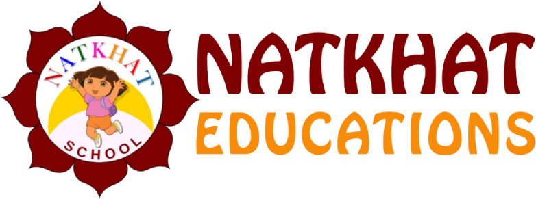

Natkhat education
<

More About Us
NATKHAT Educations, managed and run by Shri Krishn Educational Trust (Govt. Regd.), is a pioneer organization for providing excellent quality of educational services. It is ISO 9001 : 2015 certified. From conducting online educational classes like online summer camps and vocational courses for skills development, to setting up and running a full fledged pre-primary school, NATKHAT Educations aim at catering an inclusive and comprehensive education to all.
Natkhat Foundational School
Natkhat Hona Achha Hai!
PRE – NURSERY
Age Group : 2.5+ Years
Children under this age group begin to explore and develop independent thinking. At NATKHAT, we provide a more sorted and structured day with an environment that spreads positive energy and makes learning a fun filled experience.
With the theme based, age appropriate curriculum with activity-based learning, the teachers focus on manifesting the dynamic learning system of children.
Few activities in this phase include:
Learning By Exploration
Sensory Time, Story Time, Free-Play,
Art & Crafts, Creative Time,
Building Communication Skills
Math Readiness
Language Readiness
Celebration Of Festivals & Events,
Art & Craft, Etc.
The parents are equally encouraged to partner with the school to ensure that their ward is driven towards holistic development at this tender age.
NURSERY
Age Group : 3+ Years
As per New Education Policy 2020, the formalization of school education starts from nursery. Therefore, this phase marks the beginning of subject based learning. We at NATKHAT Educations give utmost importance to safe, high quality and developmentally appropriate care and education.
Our aim is to make children real thinkers so they become independent in their own way. The children would be able to make choices for themselves like what they want to draw, what toys they want or even when to go to the washroom, etc.
They are also taught how to adjust and work well in groups through sharing and cooperation.
Subjects are :
English
Hindi
Mathematics
Arts and Crafts
Few among the many activities offered are:
Enhancing Communication Skills
Expression Through Art And Drama, Role Play Activities, Stage Exposure
Math And Language Skill Development
Promoting Cognitive Development
Building Materials That Support Cognitive And Creative Thinking
Introduction To Technology
Outdoor Play to Develop Gross & Fine Motor Skills
KINDERGARTEN
Junior K.G Age Group : 4+ Years
Senior K.G Age Group : 5+ Years
While emphasizing on making academics a fun, we also ensure that children adapt to classroom settings, i.e. learn to sit and listen, obey teachers and cooperate with their fellow mates.
Our focus during this phase would be the child’s academic and cognitive progress, along with development in other life skills.
Subjects are :
English
Hindi
Mathematics
General Awareness
Arts and Crafts
The core skills taught are:
Word foundation
Learning vowels
Language , Communication and Phonological awareness
Numerical skills
Creative development (Art, Music and Dance)
Physical development
Our Programs
Our best programs for the Kids